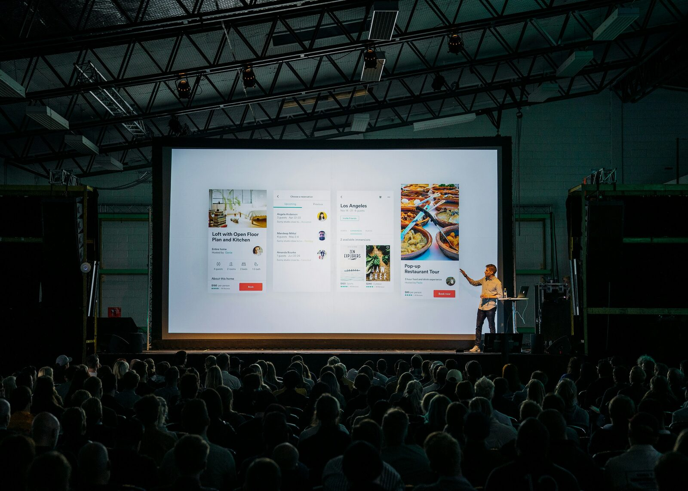

Innovation Doesn't Scale Without the Layers Beneath It
On the work beneath the work.

- Most innovation efforts fail because the layers beneath the visible idea — operating model, workforce, infrastructure, governance, trust — are disconnected from each other.
- Press releases and product launches are not the work. They are the photograph of the work, taken before the work has settled.
- Connection is what turns a stack of investments into a working system. Innovation does not scale without it.
The room is full. The backdrop is branded. A senior leader stands beside a screen with the words transformation, innovation, or future in large type. There is a press release, a photograph, a quote from a partner organization, and a sense that something important has just begun.
Six months later, the question is quieter. What changed in the way the work actually gets done?
In a great many cases, the honest answer is: not much. The strategy is approved. The technology is licensed. The training has been completed. And somehow, the daily reality of the organization looks remarkably like it did before the announcement, with new vocabulary added and a slightly heavier sense of fatigue.
This is not a failure of imagination. Most organizations have plenty of ideas. It is a failure of layers.
Organizations do not fail at innovation because they lack ideas. They fail because the layers beneath the idea are disconnected.
The software gets funded, but the workforce is not ready. The infrastructure gets built, but the use case is unclear. The strategy is approved, but no one owns the operating model. Everyone is busy. Everyone is right. Nothing compounds.
Beneath every visible innovation effort is an invisible question: who has enough trust, authority, and shared purpose to connect the layers?
The visible idea is rarely where transformation succeeds or fails. This piece is about the layers beneath it.
The visible layer
The layer everyone sees is the layer that gets the announcement. The new product, the new strategy, the new technology, the new AI initiative. It is photographable, fundable, and easy to communicate. It dominates leadership attention because it produces signals of progress that can be reported to a board, a press list, or a community of peers.
That dominance has a cost. Many organizations confuse the visible layer with the work itself. They treat the announcement as evidence that transformation is underway, and then they move on to the next initiative.
The visible layer is real. But it is the thinnest layer. It is the part of the iceberg above the water. Everything that determines whether the idea actually scales lives below it.
To understand why the idea does or does not scale, we have to look beneath it.
The operating model
The first layer beneath the idea is the layer that decides who does the work, how it is reviewed, what managers manage, how decisions get made, and what quality control looks like.
When organizations adopt new technology — AI is the current example, but the pattern has been true of every significant technology for fifty years — they almost always treat it as a software rollout. Give people access. Run a workshop. Hope productivity appears. What actually has to change is the operating model: who does what, how it is measured, what the workflow now looks like, where judgment enters, where verification sits.
This is the layer where most innovation initiatives quietly die. Not because the technology fails, but because the operating model is never redesigned around it.
Consider a company that deploys AI to accelerate document review. Six months later, the documents move faster through the first step, but the same approval chain, the same handoffs, the same legal reviews, and the same final bottlenecks remain. One task improved. The system did not.
Speed at one step does not produce speed at the system.
The operating model is the layer that determines whether the speed actually arrives.
The workforce
The next layer down is the layer that determines whether anyone inside the organization can actually do the redesigned work.
This is the layer that gets the most lip service and the least design attention. Organizations announce training programs, count completions, and report progress to a board. Almost none of it changes how work gets done, because the training is disconnected from the workflow. Skills decay within weeks because they are not tied to a real job task within a real timeline.
What does work is training built into the work itself — what universities, employers, and apprenticeship sponsors call applied learning. A skill is learned by doing the task it applies to. Skills not practiced on live work do not last.
The workforce is not a population to be trained. It is the operating layer that makes every other layer real.
AI without workforce is a license fee. Infrastructure without workforce is a building. Strategy without workforce is a memo. The workforce is not downstream from innovation. It is the medium through which innovation becomes real.
Most organizations design their workforce strategy last. It is treated as an output of other decisions instead of a precondition for them. This is exactly backwards. The workforce constraint determines what is actually possible. Everything else is theory until people can do it.
The infrastructure
Beneath the workforce sits the layer that decides whether the workforce can do anything at all.
Infrastructure is the easiest layer to overlook because it is the most invisible. When it works, no one talks about it. When it does not work, nothing else works either.
In Kansas, the conversation around AI readiness cannot be separated from fiber, interconnection, power, data centers, cooling, water, cybersecurity, and the technical talent required to keep all of it running. The state's first carrier-neutral internet exchange point exists for exactly this reason — to give Kansas the regional digital infrastructure that AI workloads actually depend on. Without it, every workforce conversation and every employer adoption story runs into the same physical constraint. With it, the layers can begin to connect.
This is what gets revealed when innovation is seen as a layered system rather than as a series of independent announcements: the layers are not just stacked. They are connected. Touch one, and the others respond. A region cannot have an AI strategy without an infrastructure strategy. It cannot have an infrastructure strategy without a workforce strategy. It cannot have a workforce strategy without partnerships across institutions that can deliver it.
The visible layer never sits alone for long.
The connective layer: governance, partnerships, and trust
Beneath the infrastructure sits the layer that decides whether any of it holds together at all.
This is the layer where most regional innovation efforts come apart. Not because anyone is acting in bad faith, but because the coordination work is invisible, unpaid, and unrewarded. Someone has to broker the partnership between the university and the employer. Someone has to translate the federal funding stream into a workable proposal. Someone has to convene the workforce board, the chamber, the community college, the state agency, and the regional planning organization. Someone has to maintain the trust that makes the next conversation possible.
Trust is the slowest infrastructure to build and the fastest to lose. It does not show up on a balance sheet, but it determines whether any of the other layers can be assembled into something coherent. The university's research capacity does not connect to the manufacturer's workforce need unless someone has the relationships and the credibility to make the introduction. The federal funding does not translate into a regional initiative unless someone has the standing to bring the right parties to the same table.
When Wichita State University built its Innovation Campus on land that had once been an 18-hole golf course, the buildings looked like the accomplishment. They were certainly the visible one — 120 acres of new construction bringing researchers, students, aerospace, advanced manufacturing, and global tech firms onto a single site. But the system layer underneath was less photogenic. It was the partnerships that made the buildings useful, the projects that flowed across institutional lines, the applied learning that put students inside live industry work, and the trust between leaders that let any real innovation emerge.
Every successful regional innovation system has a few people whose actual job is to keep the layers connected. They are usually not the most visible people in the room, but they are the reason the room can do anything.
Why connection compounds
The piece has descended through five layers. The integrating idea is what makes them more than a stack.
Connection is what turns a stack into a system.
The layers do not simply sit on top of one another. They multiply. A workforce strategy connected to infrastructure, connected to AI, connected to governance, connected to trusted partnerships produces something none of those investments could produce alone.
That is why connection compounds.
Most planning treats systems as additive. Two inputs produce two outputs. But complex systems are not additive. They are emergent. The output of a connected system exceeds the sum of its inputs because the connections themselves create new capacity. Sometimes a great deal of it. Sometimes 2 + 2 = 9.
The future is not additive. It is emergent.
This is the principle that explains why organizations pouring resources into the visible layer rarely produce real transformation. Resources poured into one layer do not compound. Resources distributed across connected layers do. The layers do not have to be perfect to multiply. They have to be connected.
What this means for the people who do this work
Three implications.
First, the work beneath the work is the actual work. The announcement is not the strategy. The strategy is not the operating model. The operating model is not the workforce. Treating the visible layer as the deliverable produces theater. Treating the connected layers as the deliverable produces transformation.
Second, connection is a design choice, not an accident. Layers do not connect themselves. Someone has to design the seams between them — between AI and workforce, between workforce and infrastructure, between infrastructure and governance, between governance and partnership. Most of that design work is invisible until it is missing.
Third, build for compounding, not for arrival. Innovation systems are not finished. They mature. The right measure is not whether the initiative was launched but whether each layer is strengthening the others over time.
Bottom line
Return for a moment to the opening scene. The press release. The photograph. The polished deck. The branded backdrop, the words on the screen.
The work that determines whether any of it matters is not in the announcement. It is in the layers beneath — the operating model, the workforce, the infrastructure, the governance, the trust between the people doing the work. Those layers do not get press releases. They get built.
Innovation doesn't scale without the layers beneath it. And the layers don't connect unless someone does the work of connecting them.
Building something that needs the layers connected?
Start with a strategic brief, or invite Tonya to speak.